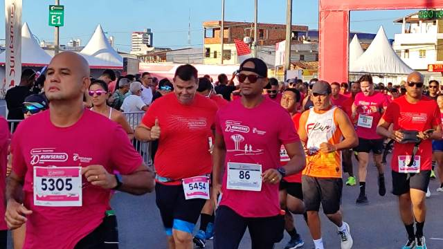
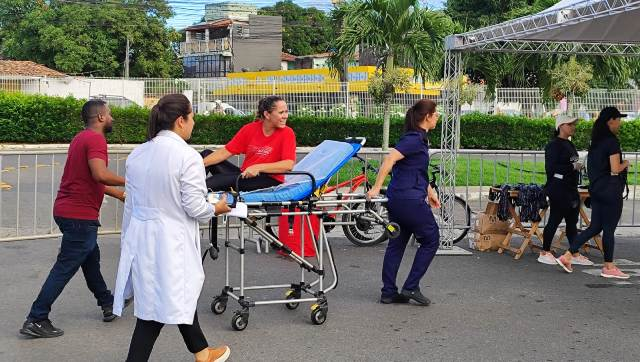

Repórter Davi
Notícias de Feira de Santana e Região
Repórter Davi
Notícias de Feira de Santana e Região
O Santander Track&Field Run Series (TF) é o maior circuito de corrida de rua da América Latina em número de provas e há 20 anos está no calendário dos corredores de todo o Brasil.
Publicado em 03/03/2026
Cerca de 800 atletas amadores e profissionais participaram, na manhã deste domingo (17), do maior circuito de corrida de rua da América Latina em número de provas, o Santander Track&Field Run. A largada e chegada ocorreram no Boulevard Shopping, com a largada a partir das 6h30. Os percursos foram de 5km e 10 km.

Foto: Ed Santos
Thais Pimentel, que participa da organização do evento e é representante da TF esportes de Bahia, contou que, no estado, a primeira edição do evento ocorreu em 2020, houve uma pausa devido à pandemia de covid-19 e, em 2022, as atividades foram retomadas. Segundo ela, a corrida existe nas principais capitais e cidades no Brasil e conta com uma participação expressiva de atletas. Ela contou que Salvador foi a primeira capital do Nordeste a realizar o evento e hoje existem, na cidade, seis edições do circuito. Na Bahia, também há o circuito em Praia do Forte e Feira de Santana.
“Temos cerca de nove etapas na Bahia e circuitos no Brasil inteiro. Rio de Janeiro, São Paulo, Nordeste e o circuito está sempre preocupado com o meio ambiente, com o atleta, com a saúde e o desenvolvimento de boas práticas. Nossa água é em latinha para ser reciclada, na arena temos o esforço de usar menos plástico. É um circuito sustentável, para a saúde, boa convivência e boas relações”, declarou.
Thais informou que cerca de 350 pessoas estão envolvidas na organização e estrutura do evento e que o esperado eram cerca de 800 participantes na corrida, e isto foi alcançado. Ela destacou que em Feira de Santana há uma crescente no número de corredores.

Foto: Ed Santos
“Cada vez a cidade tem abraçado o percurso. Temos atletas de Salvador, pessoas de cidades próximas que vieram em turma e temos as categorias de 5 km e 10 km para masculino e feminino. Os percursos são sempre no entorno do shopping, onde há a loja da Track&Field e contamos com o apoio da ,Secretaria de Mobilidade Urbana, Superintendência de Trânsito e Polícia Militar. Todos os participantes ganham a medalha de participação e os ganhadores os troféus, além de alguns brindes dos nossos patrocinadores e apoiadores”, contou.
Com informações do repórter Davi da TV Davi.